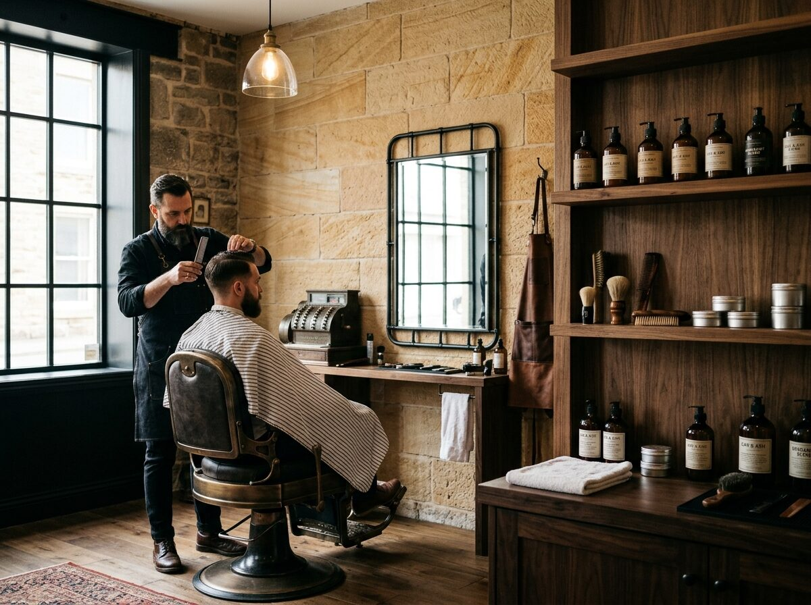
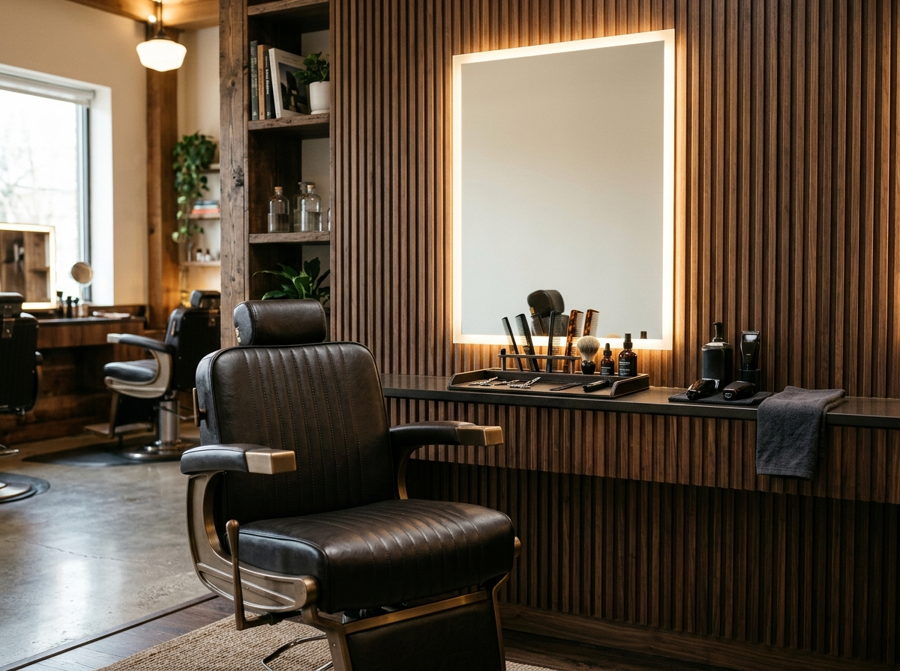
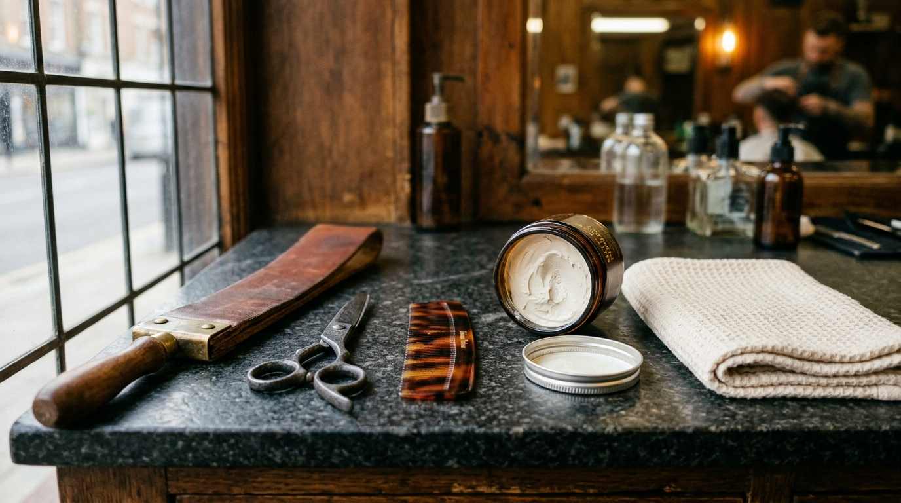

Barbería de autor · Centro Histórico, Cuenca
Precisión clásica, navaja limpia y atención sin apuros.
Tres Filos es una barbería ficticia de demostración creada para mostrar cómo un estudio de grooming presenta su catálogo de servicios, tarifas en USD y turnos demostrativos listos para enviar por WhatsApp.
Filosofía del estudio
Oficio clásico, higiene verificable y tiempos reales.
Cada elemento de esta demostración prioriza la claridad frente al cliente: cuánto dura cada sesión, qué incluye el cuidado de cabello o barba y cuál es su valor referencial en dólares.
-
01
Esterilización entre cada servicio
Hojas desechables nuevas en cada atención, desinfección UV de instrumental de acero y productos formulados sin fragancias invasivas.
-
02
Sesiones individuales de 30 a 75 minutos
Desde cuidado facial rápido de 30 min hasta el Ritual Completo Tres Filos de 75 min con toalla caliente de eucalipto y exfoliación.
-
03
Tarifario transparente en USD
Precios referenciales visibles desde el inicio y selección directa hacia el formulario demostrativo para consultar turno por WhatsApp.
Catálogo de servicios
Cortes, barba y rituales de grooming
Filtra por categoría y preselecciona cualquier servicio para cargarlo en el formulario de turno demostrativo.
Tarifario transparente
Lista de precios referenciales (USD)
Valores demostrativos sin cobros en línea. Pulsa «Seleccionar» para trasladar el servicio elegido al formulario inferior.
Corte Clásico & Tijera
$12.00 USD
Degradado Skin Fade
$14.00 USD
Perfilado & Ritual de Barba
$10.00 USD
Afeitado Tradicional a Navaja
$11.00 USD
Ritual Completo Tres Filos
$21.00 USD
Cuidado Facial Masculino
$13.00 USD

Experiencia de barbería
Sillones individuales, luz cálida y estación de toalla caliente.
La arquitectura del sitio destaca el confort del espacio: estaciones amplias en madera oscura, detalles en acero y bronce, y horarios claros en formato 24 horas para que el visitante decida antes de escribir.
- Dirección modelo (ficticia)
- Calle Larga y Hermano Miguel · Centro Histórico, Cuenca
- Atención ilustrativa (24h)
- Mar – Sáb 09:00–20:00 · Dom 10:00–15:00 · Lunes cerrado
Equipo de ejemplo
Barberos ficticios de demostración
Perfiles creados únicamente como ejemplo visual de especialidades y horarios individuales. Elige cualquiera para precargarlo en el formulario.
Sebastián Paredes
Emilio Cárdenas
Estilo y acabados
Tres disciplinas editoriales del catálogo
Fichas ilustrativas de acabado basadas en los servicios del catálogo. No representan trabajos de clientes reales ni testimonios.

01 · Cortes de precisión
Tijera clásica o degradado limpio
Asesoría según forma craneal y crecimiento del cabello, combinando trabajo a tijera con cera mate o transiciones graduales a navaja y shaver.
$12.00 – $14.00 USD
02 · Barba y navaja
Alineación simétrica y espuma tibia
Compresa de toalla caliente con eucalipto para abrir poro, perfilado preciso a navaja con hoja nueva y cierre calmante con aceite o tónico frío.
$10.00 – $11.00 USD
03 · Rituales y piel
Carbón activo, vapor y acabado mate
Desde la sesión facial con vaporizador tibio y mascarilla mineral hasta el paquete integral de corte, barba y exfoliación sin brillo graso.
$13.00 – $21.00 USD
Galería editorial
Oficio, vapor y detalles de estudio
Escenas ilustrativas exclusivas de esta galería. Haz clic en cualquier fotografía para ampliarla sin salir de la página.
Proceso de atención
Cómo funciona la consulta de turno demostrativa
Flujo transparente pensado para que el visitante prepare todos los datos antes de abrir WhatsApp.
Revisa servicio y duración
Consulta precios en USD y minutos estimados (30 a 75 min) desde las tarjetas o el tarifario.
Indica barbero y franja
Elige uno de los perfiles ficticios o «Cualquier barbero disponible» y sugiere fecha y hora en formato 24h.
Validación inmediata
El formulario verifica tus datos obligatorios en pantalla antes de redactar el resumen de consulta.
Envío directo por WhatsApp
Se genera el enlace listo con tu solicitud demostrativa hacia AV·STUDIO para su coordinación real.
Transparencia de demostración: Tres Filos no consulta disponibilidad en
tiempo real ni confirma turnos o pagos en línea; los horarios mostrados en el selector
son ilustrativos y la disponibilidad real se coordina directamente por WhatsApp cuando el
sitio se implementa para una barbería real.
Agenda y ubicación
Reserva tu turno demostrativo
Valida tus datos para generar una solicitud de ejemplo dirigida por WhatsApp a Anderson Vallejo (AV·STUDIO). Al ser un sitio de muestra, no agenda ni bloquea turnos reales.
Ubicación de referencia (ficticia)
Calle Larga y Hermano Miguel · Centro Histórico, Cuenca, Ecuador
Horarios ilustrativos (formato 24h)
Martes a sábado: 09:00 a 20:00 · Domingos: 10:00 a 15:00 · Lunes cerrado
Atención directa de AV·STUDIO
WhatsApp: +593 979 290 747 · Correo: andersonvallejo021@gmail.com